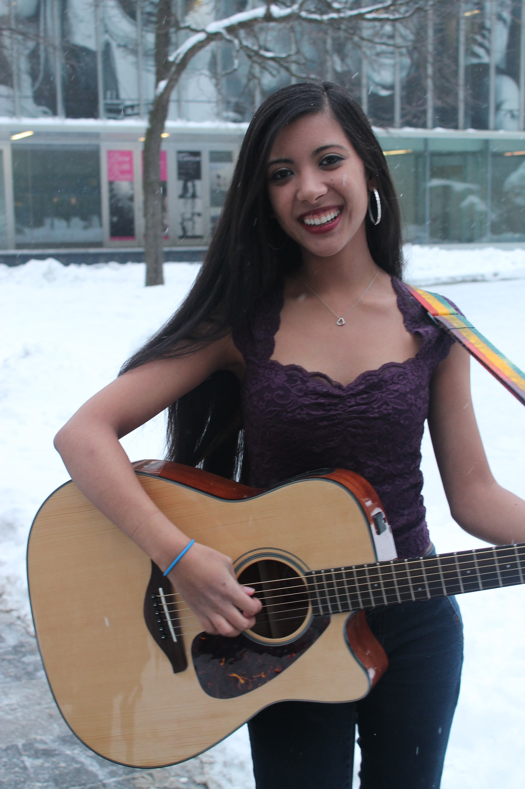
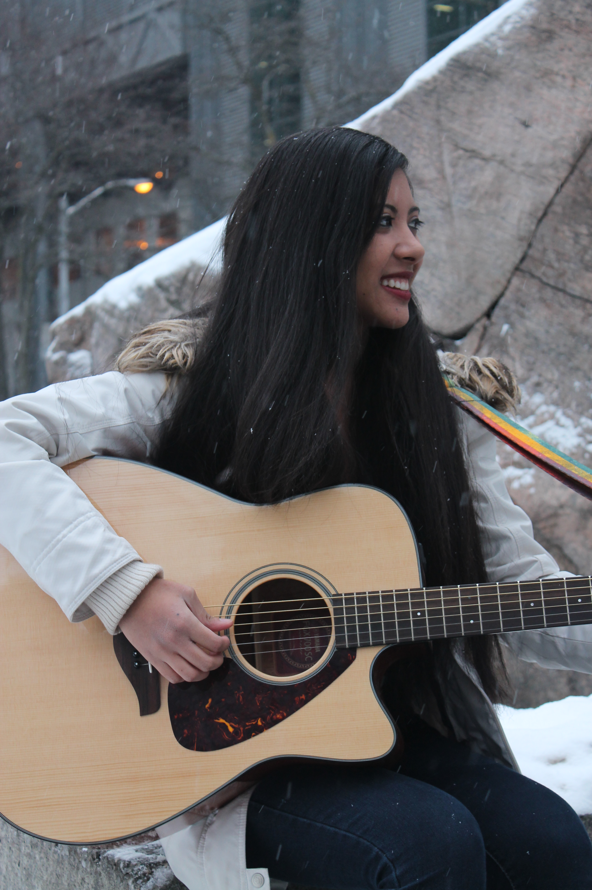

Article by Diana Whistance-Smith
Photos by Alina Bykova
Uploaded on February 20, 2014
Her childhood was filled with performances for her family, and being able to sing a song instantly after one listen on the radio. Now, her powerhouse vocals fill the room on every open mic night she gets the chance to perform. From an elementary school wallflower who moved from the island vibes of Jamaica to American-music-influenced Toronto, Ashley Lyn has dominated both internet and performance domains from high school talent shows to televised performances, impressing everyone from locals to professional agents.
Singing from the striking age of two, this second-year Creative Industries songbird is no stranger to the spotlight. Born in Mandeville, Jamaica, the island feel was in no comparison to the beats of up-and-coming artists of the early 2000’s. Moving to Toronto at age of seven wasn’t easy, but the familiar voices of renowned artists from Christina Aguilera to The Backstreet Boys helped smooth the cultural transition.
“I still think about the first CD I owned, and that was Christina Aguilera. The music is the one thing that helped me keep it together,” she recalls. When I moved here it was a very different experience, it was a culture shock. It was hard for me to adjust to the way things worked socially.”
The desire to fulfill her dreams came from the popular teen movie, High School Musical. Inspired by the movie’s protagonist, Gabriella, who struggles to share her vocal talents with her peers but overcomes her fears at the school’s talent show, Ashley was encouraged to break free from her wallflower nature. It was with the release of the movie that she began taking part in her school’s choir with supporting roles, and working on writing her own music. She later went on to take a vocal class in high school, and began posting covers to her favourite songs on her own YouTube channel.
“The whole plot was to be yourself and go after your dreams. It was helpful to me in terms of the transformation through high school. When I’m actually on stage, I’m more comfortable than I am in social situations.” she describes. “I knew that I wanted to do this for a living, but I used to be very conscious of what other people thought, and I always felt I could be better. I was constantly fighting that battle with myself.”
Inspired by artists who composed their own music, Ashley picked up her first guitar at age 13, and began writing her own songs. She was also featured in a local newspaper for her performance at her high school coffee shop’s mental illness awareness charity, and floored the audience with her cover of Katy Perry’s “Firework”.
She recently performed at Long & McQuade’s Singing Contest with John Santos, which was broadcasted on local television channels like OMNI. Talent agents from Los Angeles had also reached out to the songstress through her YouTube channel, offering her the chance to become ‘the next Rihanna’, but she turned it down to stay true to herself.
“I want to be the first me, not made into someone else. I want my music to be heard, I want it to be authentic and from my heart,” she says.
Ashley is currently in the process of writing and recording new music for her YouTube channel, and hopes to be able to pursue her talents in the years to come.

Spotlight Editor in Chief
Vjosa Isai
vjosa.isai@ryerson.ca
Want to get your time under the lights? Are you a writer looking to join the Artist Spotlight initiative? E-mail us at music@ryerson.ca to see how!